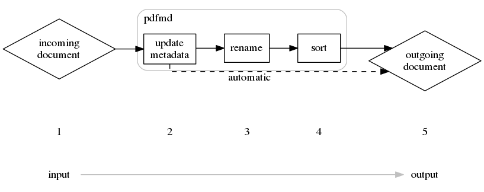

pdfmd/concept
The requirement
After a couple of years growing into adulthood and dealing with bureaucracy, binders full of paper started growing in my shelfs and I found myself in the middle of question "Should I keep them or throw them?". I could hardly determine which one to keep, but this process of getting Invoices and official documents and just storing them, did not seem to scale well in the future.
I therefore borrowed a document scanner and digitalized all documents I had.
In the end I found myself with a couple of hundred documents, which I had to store somewhere and somehow.
Out of this the naming scheme for document grew.
YYYYmmdd-<author>-<document_type>-<title>-<subject>-<keywords>.pdf
This served me well for storing the documents, but became quite tedeous to perform manually with all documents.
The idea
After a couple of years following this naming procedure, I finally had enough to manually rename the documents, making mistakes in the spelling and have to sort them as well.
Out of necessasity I wrote pdfmd which helps me gathering some metadata about a document, putting it into the document, renaming it according to the naming scheme and sorting it away as well.
This significanly brought down the time I spent working on a document from a couple of minutes to less than a minute including scanning the original.
Some error-catching logic implemented also prevents me from making small spelling errors or not following the scheme.
Workflow
The workflow is fairly simple
- A document comes in in any way. This can be scanned documents or e-mailattachments, e.g.
- Pdfmd interactively updates the metadata of the document to make sure it correctly reflects the content of the document.
- Pdfmd either automatically or manually renames a single or multiple document(s) to a consistent naming-sheme.
- Pdfmd sorts either automatically or manually single or multiple documents into a folder structure.
- The documents coming out of this workflow are stored in a hierarchically folderstructure and easy to find again.

While the incoming document might be called like this:
$ ls *.pdf
Scan01.pdf
the finished document after entering some metadata looks like this:
$ ls *.pdf
19700101-ibm-inv33265-x3350_server-project_secret.pdf
Just by looking at the filename I can search for
- the date
- the document author
- for an invoice (inv)
- for an invoice number (33265)
- for a server name (x3350)
- for a designated assigned project (project secret)
While the metadata can contain even more detailed information, this usually is enough to cover my needs.